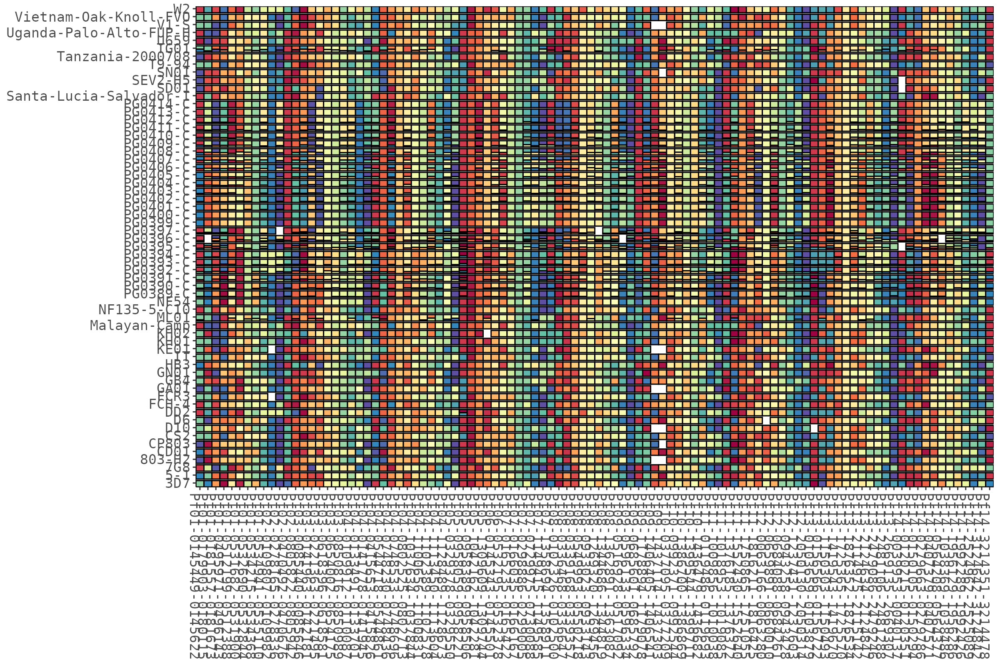
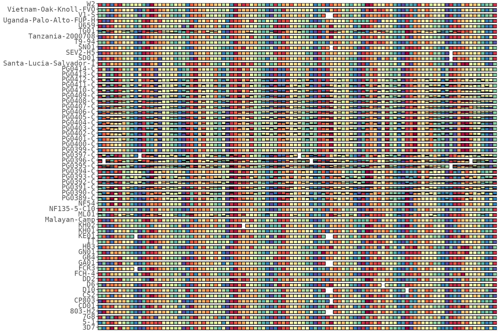
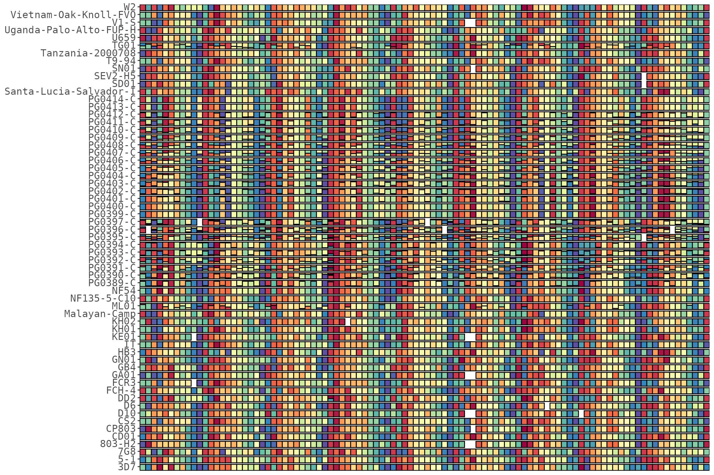
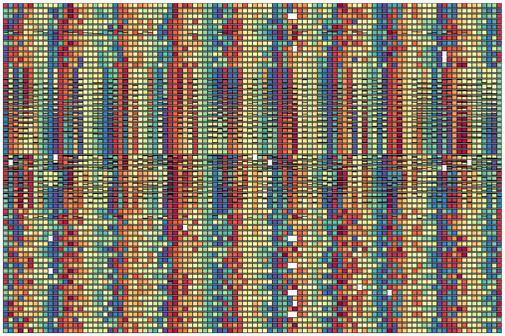

HaplotypeRainbows builds haplotype “rainbow” plots from targeted-amplicon (microhaplotype) data: a grid where columns are targets and rows are samples, and each cell shows the within-sample haplotype composition. Haplotype colours rotate across targets to produce the characteristic rainbow.
Everything hangs off one R6 class, HaplotypeRainbow,
which carries your column mapping so you only set it once. This article
covers the essentials; the other articles go deep on colours, metadata,
clustering & splitting, and saving & interactivity.
library(HaplotypeRainbows)
library(ggplot2)
# example data (uses the older SeekDeep column names)
data("pfisolateExample")Constructing the object
You need four columns: a sample id, a
target id, a within-target haplotype
id, and a relative count (raw counts are fine — they’re
normalised to within-sample fractions internally). The defaults follow
the Portable Microhaplotype Object (PMO) convention
(library_sample_name / target_name /
seq / reads); the example data uses the older
SeekDeep names, so we pass them explicitly.
rb <- HaplotypeRainbow$new(
pfIsosHeomeV1,
sample_col = "s_Sample",
target_col = "p_name",
popuid_col = "h_popUID",
rel_abund_col = "c_AveragedFrac"
)
rb
#> <HaplotypeRainbow>
#> columns: sample = s_Sample | target = p_name | haplotype = h_popUID | counts = c_AveragedFrac
#> rows in: 7611
#> prepped: <not yet - call $prep()>haplotype_rainbow() is an identical convenience
constructor for PMO-named tables:
rb <- haplotype_rainbow(my_pmo_allele_table) # PMO column names, no mapping neededChaining. Transforming methods (prep(),
prep_shade(), sort_*(),
set_sample_order(), add_cluster_gaps()) mutate
the object and return it invisibly, so they chain. plot()
and the add_*() helpers return a ggplot.
rb$prep(sort = "population_rank")$sort_by_clustering()$plot()Prepping: haplotype ordering
prep() must be called before plotting. sort
controls how haplotypes stack within each cell:
rb$prep(sort = "population_rank") # order by population rank (default)
rb$plot()
rb$prep(sort = "within_sample_freq") # order by within-sample fraction
rb$plot()
Other prep() knobs — min_pop_size drops
sparse targets, color_period sets the rainbow period (see
the colours article), and
bar_height < 1 leaves a gap between sample rows:
rb$prep(sort = "population_rank", bar_height = 0.6) # thinner bars, more row gap
rb$plot(x_axis_labels = FALSE)
Axis labels
Target names (x) and sample names (y) show by default. Toggle either off — the plot keeps tight margins with no leftover ticks, which is handy when there are too many samples or targets to label:
rb$prep(sort = "population_rank")
rb$plot(x_axis_labels = FALSE) # hide target names
rb$plot(x_axis_labels = FALSE, y_axis_labels = FALSE) # hide both
Accessing the prepped data
get_prepped() returns the prepped table if you want to
post-process the plot yourself or inspect the derived columns:
head(rb$get_prepped())
#> # A tibble: 6 × 22
#> s_Sample p_name h_popUID c_AveragedFrac totalAbund s_COI relAbundCol_mod
#> <fct> <fct> <chr> <dbl> <dbl> <int> <dbl>
#> 1 3D7 Pf01-014544… Pf01-01… 1 1 1 0.8
#> 2 3D7 Pf01-017990… Pf01-01… 1 1 1 0.8
#> 3 3D7 Pf01-018155… Pf01-01… 1 1 1 0.8
#> 4 3D7 Pf01-049597… Pf01-04… 1 1 1 0.8
#> 5 3D7 Pf01-051219… Pf01-05… 1 1 1 0.8
#> 6 3D7 Pf01-053168… Pf01-05… 1 1 1 0.8
#> # ℹ 15 more variables: fracCumSum <dbl>, fracModCumSum <dbl>, fakeFrac <dbl>,
#> # fakeFracMod <dbl>, fakeFracCumSum <dbl>, fakeFracModCumSum <dbl>,
#> # samp_n <int>, popid <int>, maxPopid <int>, popidFrac <dbl>, hueMod <dbl>,
#> # popidPerc <dbl>, popidFracRegColor <dbl>, popidPercLog <dbl>,
#> # popidFracLogColor <dbl>